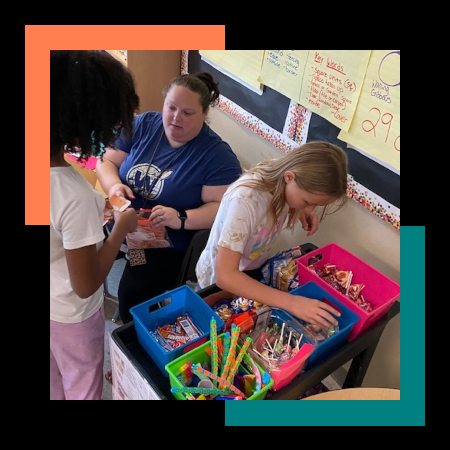

Meet Allison
Meet Allison McCue. She’s a special kind of teacher that does a lot for her students. If you look at the picture to the column, you can see her on a field trip with her latest 4th grade class. The picture was taken in front of the Castillo De San Marcos in St. Augustine, Florida. The class did a lot more than just visit the fort that day. They also got to see a Pirate Museum, The Oldest Schoolhouse, and lots of sightseeing and shopping. Field trips like this are something kids of all ages look forward to. Not just kids get to go, parents can go too, as chaperones of course.
Allison does other fun things with her students too. In the picture to the column, she is working the treasure box. Students earn certificates by doing good deeds, following the rules, being prompt, and any faculty member can award them for these reasons and many others. At the end of the month, Allison opens up the treasure box and students can use those certificates to buy gifts, sweets, decorations, toys, supplies, or anything else that has been provided by the school, parents, other teachers, or even private donors. Different items have different price tags so students have to plan carefully to get what they really want.
Teaching isn’t always field trips and treasure boxes. Those are special rare occasions. Most of the time, teaching involves actual instruction. One of the things that Allison will do that is different is that she makes teaching and learning fun. In this final picture you can see Allison standing between two students. Those students are teachers for the day. In the treasure box mentioned above, these two students planned and saved up so they could buy the opportunity to be teachers for a day. Allison provided them with the knowledge, supplies, and lesson plans so they would be successful. She then let them lead the class in instruction for the day and provided support when needed.